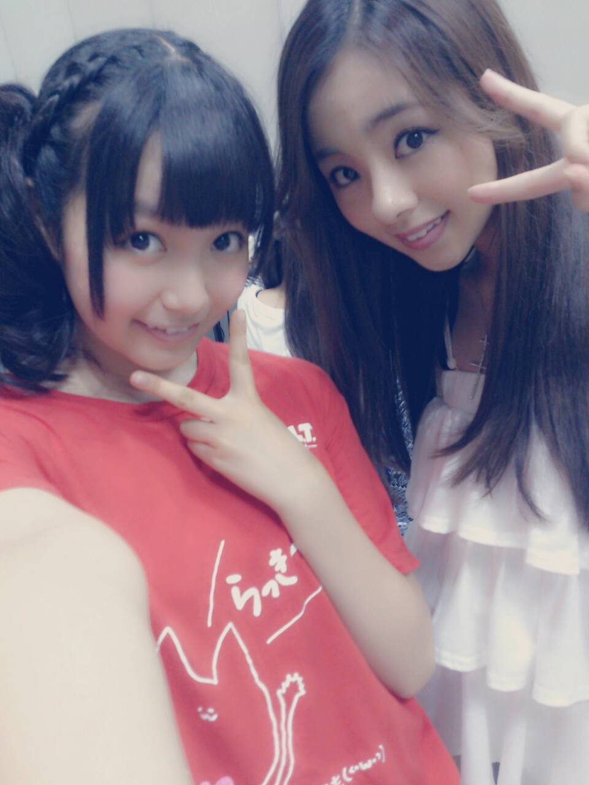

こんちゃんわ〜(о´∀`о)
Rotty☆でーーす //

大阪で--す )))
今日は皆で 大阪の鉄板焼を
食べてきたよーー(о´∀`о)
とっても おいちかったおー。
食べた後、皆でお腹さわりあいして
「あw これは妊娠３ヶ月やー！」
ゆうたりしてたよ〜(о´∀`о)
皆 食べた後は 下っ腹ぽっこりちゃん♪
なぜだか知らんが まひろは
下っ腹ぢゃなくて
胃袋がぽっこりしてた(*^^*)笑
今はテンションあがってます ！
だってだってねっ、
大阪帰ってきたのが
プリンシパル以来なんだよ〜\(・ω・)/
実家には帰れないけど、
やっぱり大阪大好きやぁ〜 )))
大阪の皆さんっ、
明日は Zeppライブ
よろしくお願いします！！
いやぁ〜、
大阪は 盛り上がるんだろうなぁ〜
盛り上がってくれるんだろうなぁ〜(о´∀`о)笑
ハードル上げる 。あははーん 笑
いやぁ〜 にしても楽しみ過ぎる！！
ライブで
一緒に、発散しましょーねっ☆☆
一緒に汗かける位 盛り上がろうっ！
ではっ、
皆から一言 ！！！
ひなちま
「おやすみぃ〜。」
あみ
「私は膝がちょっと出てます。」
ひな
「まにまには生キャラメル。」
かずみ
「私は最近ちょっとマツゲが伸びた。」
ちはる
「ちーちゃんは、テルマエロマエを
買いに行きたいなあ。」
おやすみなさ〜い( ☆∀☆)のし